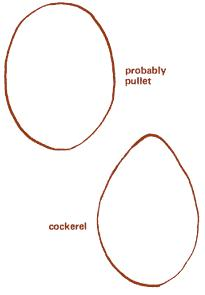

Issue # 25 - January/February 1974
Here's the secret: If you want your brood to be mostly female, select and incubate only the most nearly oval eggs. Those with a noticeably pointed end produce cockerels. Many of the chicks-to-be you examine, of course (especially the first time you try this idea), will fall into an indeterminate range ... so pick only the most clearly oval shapes if you want future layers.
Commercial breeders cull and hatch their "female" eggs because pullets bring a higher price, Therefore, a fertile batch of "straight-run" eggs bought from a big dealer is likely to contain mostly indeterminate and pointed discards and give you considerably less than a 50-50 chance of hatching female chicks. To improve the odds, choose from your own hens' layings or ask a local chicken raiser to save his most obviously oval finds for you.
Sound hard to believe? The first time I heard of this trick, I thought someone was pulling my only-recently-rural leg. But try it ... it works!
|
 |
|
|